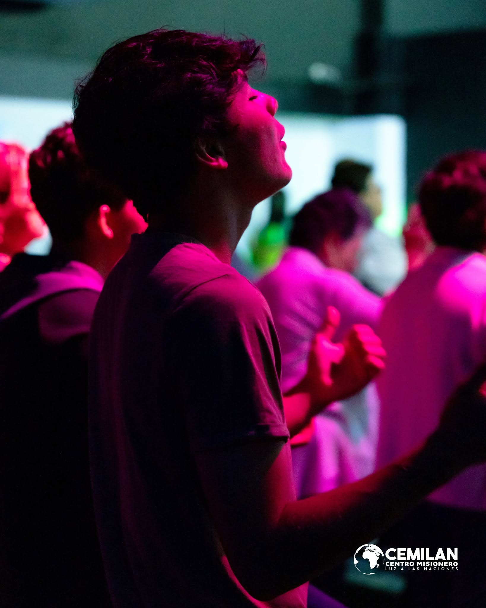
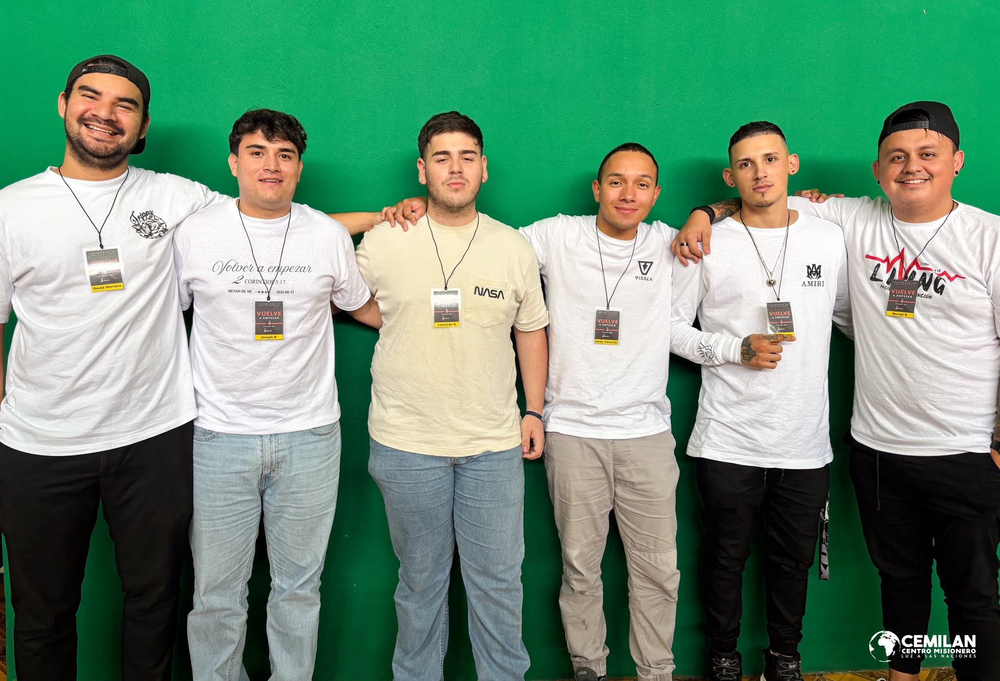
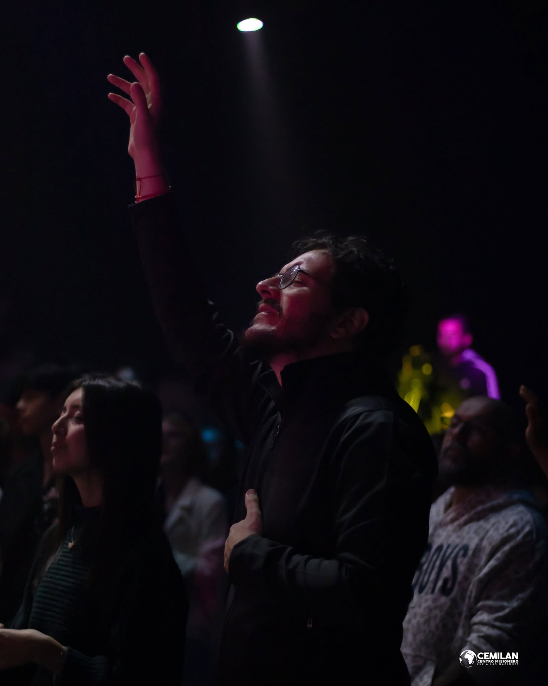

Nuestra Misión
Acercar a los jóvenes a Cristo para que descubran su identidad.
El Corazón de Nuestra Red
Nos define el fuego en nuestras almas y la gracia en nuestras acciones.

Pasión

Amor

Unción
Nuestra Visión
"Salvar, Sanar y Liberar a las personas, a través del Espíritu Santo. Para que se conviertan en discípulos de Jesús, sirvan en la visión y encuentren su propósito en el reino."
Nuestra Misión en Simple
Acercar
Queremos que cada joven encuentre una relación real con Dios, no solo una religión. Que lo conozca, lo experimente y lo siga de verdad.
Conectar
Creemos que nadie debe vivir solo. Creamos comunidad donde las personas se conocen, se apoyan y crecen juntas en la fe.
Propósito
Cada joven tiene un llamado único. Queremos ayudarte a descubrir para qué fuiste creado y darte un lugar donde vivirlo.
"Acercar a los jóvenes a Cristo para que descubran su identidad."
Tu Camino en Living
El viaje de cada uno es único, pero todos caminamos hacia la misma luz.
Primera Visita
Cruza la puerta y forma parte. Sin expectativas, solo una invitación abierta a ver de qué tratamos.
Grupos de Amistad
Conéctate con un grupo. Comidas compartidas, historias y crecimiento espiritual profundo ocurren aquí.
Preparación
Prepárate bajo los principios bíblicos, desarrolla tus habilidades y alcanza un entendimiento mayor.
Líder Living
Entra en tu llamado. Lidera un grupo, sirve a la iglesia y ayuda a otros a encontrar su identidad en Cristo.